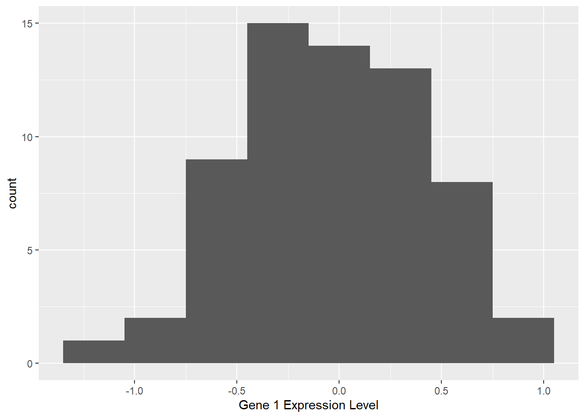
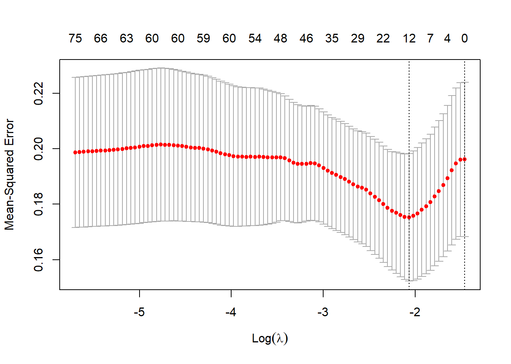

4 High Dimensional Data Example
The NCI 60 data consists of expression levels from 6830 genes from 64 different cancer cell lines. We want to create a model predicting the gene expression level of gene 1 using the 6829 other genes as predictors. Because this is a problem where the number of predictors is far greater than the number of observations, regular least squares regression will not be applicable, so a regularized regression method will be used.
In this dataset, the data is already standardized.
The graph above shows the distribution of the gene expression level being examined.
4.0.1 Calculating Model Using LASSO
In computing a LASSO solution to a problem, a main point of concern is the calculation of the Lambda term. In the overview section above, the lambda term was discussed as being the penalty term for the regularization. There are several R packages used to calculate Lambda in a LASSO problem. In this high dimensional example, the glmnet package will be used to estimate the optimal lambda value for the data and to generate the final model. The point of this example is to demonstrate the LASSO effect of reducing the dimensionality of a high dimensional example.
The cv.glmnet function uses cross-fold validation to generate LASSO regression models for the gene dataset. It outputs a series of models, each with its own lambda value. The model with the minimal lambda value is the one used for the final fitted model.
set.seed(250)
#Create model using cross fold validation and glmnet.
model <- cv.glmnet(predictors, resp, alpha=1)
bestLambda <- model$lambda.min
plot(model)
The plot above shows the change in MSE for the different models compared to their lambda values. The optimal lambda value calculated was 0.1263351
Now that the optimal lambda has been chosen, the final model will be fit to the data and the output coefficients from the 6829 original coefficients will be displayed.
finalModel <- glmnet(predictors,resp, alpha=1, lambda=bestLambda)
coefTable <- coefficients(finalModel)
coefList <- data.frame(matrix(ncol=2,nrow=0))
colnames(coefList)<-c("Gene Number","Coefficient")
for(x in 1:nrow(coefTable)){
if(coefTable[x,1] > 0)
{rows <- nrow(coefList)
newRow <- c(x,coefTable[x,1])
coefList[rows+1,] <- newRow
}
}
finalModelPredict <- predict(finalModel, s= bestLambda, newx = predictors)
print(coefList) Gene Number Coefficient
1 3936 0.007314000
2 3995 0.045146244
3 4818 0.066865827
4 5435 0.005142151
5 6262 0.008561928
6 6576 0.019084629
7 6609 0.114305087eval_results(resp,finalModelPredict,geneTable) RMSE Rsquare
1 0.3271616 0.4417445In the final model, the 6829 original gene expression levels have been reduced down to 6 different genes that the LASSO algorithm identified as having a large impact on gene 1’s expression level.